pacman::p_load(tidyverse, sf, httr, tmap, spatstat, rvest)Take-home Exercise 1
Objective for this hands-on exercise
Geospatial plays a vital role in urban planning as businesses are not just offices or stores; they influence where people go, where they live and how a city grows. Not only that, it can also be used to optimize operations, and create effective strategies to attract investment and promote sustainable growth. for Thus, we want to investigate the spatial and spatio-temporal pattern of new businesses and firms established in Singapore for the first six months of 2025:
The spatial pattern: identifying “where” business entities are located and if there are patterns and trends that can be vital understood by urban planners
The spatial-temporal pattern: identify not just the “where” but also “when” the new business entities are located and how they change over time.
Import library
The libraries used in this exercise would be:
tidyverse: collection of R packages that for data manipulation and visualization
sf: simple features in R to encode and analyze spatial vector data
httr: tools to work with URLs and HTTP
tmap: used to draw thematic map
spatstat: spatial statistics with focus on analyzing spatial point patterns in SD (with some 3D support)
rvest: scrape data from web
The Data
For this take-home exercise, we’ll be using the ACRA Information on Corporate Entities which is a collection of csv files that provide dataset of registered companies in SIngapore to investigate. We’ll also be using Master Plan 2019 Subzone Boundary (No Sea) for geometry.
Import Data
In this section, we’ll import the Master Plan 2019 Subzone Boundary file.
maps <- st_read("data/Master Plan 2019 Subzone Boundary (No Sea) (KML).kml") %>%
st_zm(drop = TRUE, what = "ZM") %>% st_transform(crs = 3414)Reading layer `URA_MP19_SUBZONE_NO_SEA_PL' from data source
`C:\stefanie-fel\ISSS626-GAA\Take-home_Ex\Take-home_Ex01\data\Master Plan 2019 Subzone Boundary (No Sea) (KML).kml'
using driver `KML'
Simple feature collection with 332 features and 2 fields
Geometry type: MULTIPOLYGON
Dimension: XY
Bounding box: xmin: 103.6057 ymin: 1.158699 xmax: 104.0885 ymax: 1.470775
Geodetic CRS: WGS 84Next, we’ll extract all csv files that starts with ACRA and save it as an rds file.
folder_path <- "data/ACRAInformationonCorporateEntities"
file_list <- list.files(path = folder_path,
pattern = "^ACRA*.*\\csv$", full.names = TRUE)
acra_data <- file_list %>%
map_dfr(read_csv)write_rds(acra_data, "data/rds/acra_data.rds")Prepare Map Data
we’ll tidy the map data by building a function to extract attributes like REGION_N, PLN_AREA_N, SUBZONE_N and SUBZONE_C from HTML Description column in the KML file as it will be used to focus on some regions and not the whole Singapore.
extract_kml_field <- function(html_text, field_name) {
if (is.na(html_text) || html_text == "") return(NA_character_)
page <- read_html(html_text)
rows <- page %>% html_elements("tr")
value <- rows %>%
keep(~ html_text2(html_element(.x, "th")) == field_name) %>%
html_element("td") %>%
html_text2()
if (length(value) == 0) NA_character_ else value
}bg <- maps %>%
mutate(
REGION_N = map_chr(Description, extract_kml_field, "REGION_N"),
PLN_AREA_N = map_chr(Description, extract_kml_field, "PLN_AREA_N"),
SUBZONE_N = map_chr(Description, extract_kml_field, "SUBZONE_N"),
SUBZONE_C = map_chr(Description, extract_kml_field, "SUBZONE_C")
) %>%
select(-Name, -Description) %>%
relocate(geometry, .after = last_col())saveRDS(bg, file = "data/bg.rds")Prepare ACRA data
extract_data <- function(data, code){
data %>%
select (1:24) %>%
filter(primary_ssic_code == code) %>%
rename(date = registration_incorporation_date) %>%
mutate(regis_date = as.Date(date),
YEAR = year(date),
MONTH_NUM = month(date),
MONTH_ABBR = month(date,
label = TRUE,
abbr = TRUE)) %>%
mutate(
postal_code = str_pad(postal_code,
width = 6, side = "left", pad = "0")) %>%
filter(YEAR == 2025)
}
biz_62011 <- extract_data(acra_data, 62011)
biz_56111 <- extract_data(acra_data, 56111)
biz_47102 <- extract_data(acra_data, 47102)
Tip
Tidying the ACRA data includes:
Select target business using SSIC, in this case we’ll be looking into companies that develops apps and software (SSIC: 62011), restaurants (SSIC: 56111) and (SSIC: 47102).
Derive year and month from registration_incorporation_date
Tidy postal code values to ensure avoid 5 digit postal code by mistake
Select businesses registered in 2025
Geocode ACRA data
# for apps and software development company
postcodes1 <- unique(biz_62011$postal_code)
url <- "https://onemap.gov.sg/api/common/elastic/search"
found1 <- data.frame()
not_found1 <- data.frame(postcode = character())
for (pc in postcodes1){
query <- list(
searchVal = pc,
returnGeom = "Y",
getAddrDetails = "Y",
pageNum = "1"
)
res <- GET(url, query = query)
json <- content(res)
if (json$found != 0){
df <- as.data.frame(json$results, stringsAsFactors = FALSE)
df$input_postcode <- pc
found1 <- bind_rows(found1, df)
} else {
not_found1 <- bind_rows(not_found1, data.frame(postcode = pc))
}
}
Note
Extract unique postal code from postal_code column from data frame
Perform geocode by submitting the postal code to SLA OneMap Reverse Geocode API
Save the results into 2 data frame found (for records where API found the postal code) and not_found (for records where postal code is not found)
# for restaurants
postcodes2 <- unique(biz_56111$postal_code)
url <- "https://onemap.gov.sg/api/common/elastic/search"
found2 <- data.frame()
not_found2 <- data.frame(postcode = character())
for (pc in postcodes2){
query <- list(
searchVal = pc,
returnGeom = "Y",
getAddrDetails = "Y",
pageNum = "1"
)
res <- GET(url, query = query)
json <- content(res)
if (json$found != 0){
df <- as.data.frame(json$results, stringsAsFactors = FALSE)
df$input_postcode <- pc
found2 <- bind_rows(found2, df)
} else {
not_found <- bind_rows(not_found2, data.frame(postcode = pc))
}
}# mini mart, eand covenience stores
postcodes3 <- unique(biz_47102$postal_code)
url <- "https://onemap.gov.sg/api/common/elastic/search"
found3 <- data.frame()
not_found3 <- data.frame(postcode = character())
for (pc in postcodes3){
query <- list(
searchVal = pc,
returnGeom = "Y",
getAddrDetails = "Y",
pageNum = "1"
)
res <- GET(url, query = query)
json <- content(res)
if (json$found != 0){
df <- as.data.frame(json$results, stringsAsFactors = FALSE)
df$input_postcode <- pc
found3 <- bind_rows(found3, df)
} else {
not_found1 <- bind_rows(not_found3, data.frame(postcode = pc))
}
}Tidy Geocode Data
We also want to append the location information (x-coordinate and y-coordinate) of the found1 table into the dataframe.
# for apps and software development company
biz_62011 = biz_62011 %>%
left_join(found1,
by = c('postal_code' = 'POSTAL'))
head(biz_62011)# A tibble: 6 × 118
uen issuance_agency_id entity_name entity_type_descript…¹
<chr> <chr> <chr> <chr>
1 202500399D ACRA ASTRIKOS PTE. LTD. Local Company
2 202500694M ACRA ACK TECH HOLDING PRIVATE… Local Company
3 202500790D ACRA ASTRASHORT PTE. LTD. Local Company
4 202500857D ACRA ALVIORA PTE. LTD. Local Company
5 202501030C ACRA AETHERNEXA PTE. LTD. Local Company
6 202501202N ACRA A ABOUT PETS PTE. LTD. Local Company
# ℹ abbreviated name: ¹entity_type_description
# ℹ 114 more variables: business_constitution_description <chr>,
# company_type_description <chr>, paf_constitution_description <chr>,
# entity_status_description <chr>, date <date>, uen_issue_date <date>,
# address_type <chr>, block <chr>, street_name <chr>, level_no <chr>,
# unit_no <chr>, building_name <chr>, postal_code <chr>,
# other_address_line1 <chr>, other_address_line2 <chr>, …# restaurant
biz_56111 = biz_56111 %>%
left_join(found2,
by = c('postal_code' = 'POSTAL'))# analytics related company
biz_47102 = biz_47102 %>%
left_join(found3,
by = c('postal_code' = 'POSTAL'))As can be seen above, the current datatype for X and Y coordinate are in character, so we’ll change it to numeric. Then, we’ll save the dataframe and convert it into sf dataframe.
biz_62011$X <- as.numeric(biz_62011$X)
biz_62011$Y <- as.numeric(biz_62011$Y)
biz_62011_sf <- st_as_sf(biz_62011,
coords = c("X", "Y"),
crs = 3414)biz_56111$X <- as.numeric(biz_56111$X)
biz_56111$Y <- as.numeric(biz_56111$Y)
biz_56111_sf <- st_as_sf(biz_56111,
coords = c("X", "Y"),
crs = 3414)biz_47102$X <- as.numeric(biz_47102$X)
biz_47102$Y <- as.numeric(biz_47102$Y)
biz_47102_sf <- st_as_sf(biz_47102,
coords = c("X", "Y"),
crs = 3414)# save sf dataframe into RDS
saveRDS(biz_47102_sf, file = "data/biz_47102_sf.rds") # mini-market and convenience stores
saveRDS(biz_56111_sf, file = "data/biz_56111_sf.rds") # restaurants
saveRDS(biz_62011_sf, file = "data/biz_62011_sf.rds") # tech companiesNext, we’ll visualize the where the frequency of companies that were registered from the beginning of the year and where they are located.
ggplot(data = biz_62011,
aes(x = MONTH_ABBR)) +
geom_bar() + ggtitle("Histogram of Entities Registered from Jan to Jul")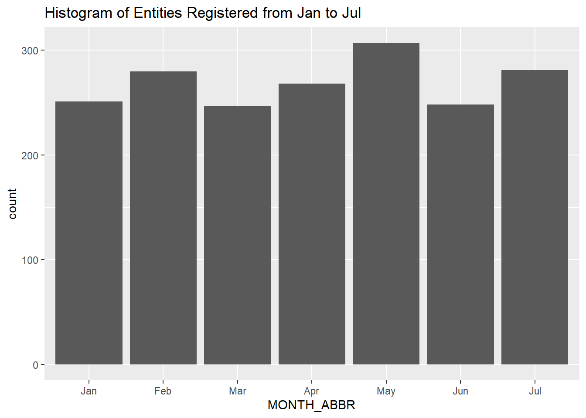
ggplot(data = biz_56111,
aes(x = MONTH_ABBR)) +
geom_bar() + ggtitle("Histogram of Entities Registered from Jan to Jul")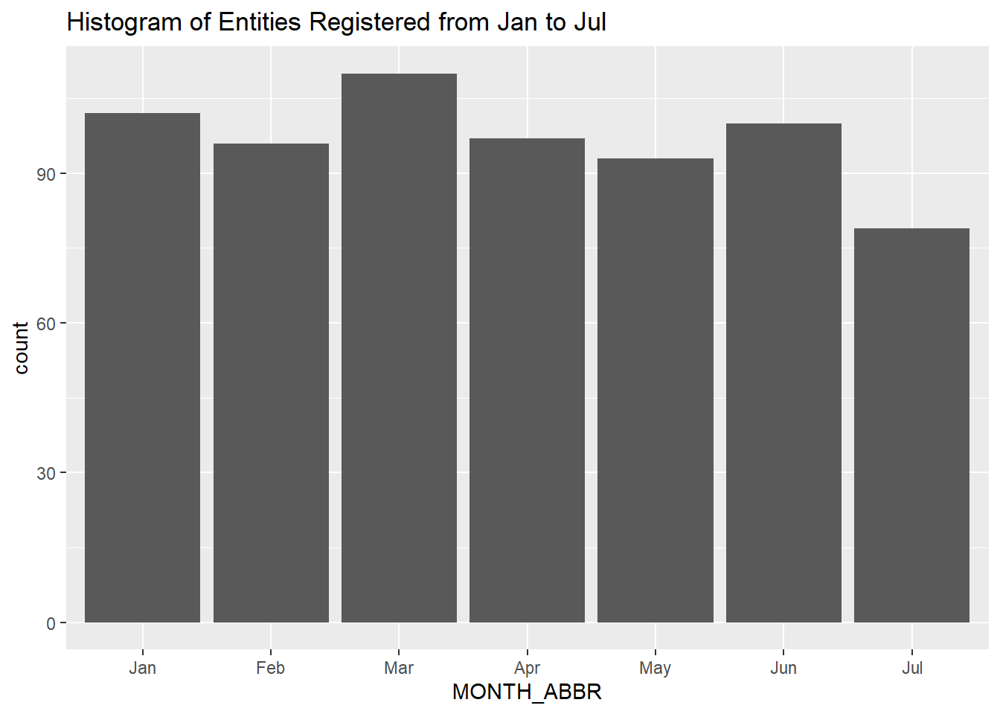
ggplot(data = biz_47102,
aes(x = MONTH_ABBR)) +
geom_bar() + ggtitle("Histogram of Entities Registered from Jan to Jul")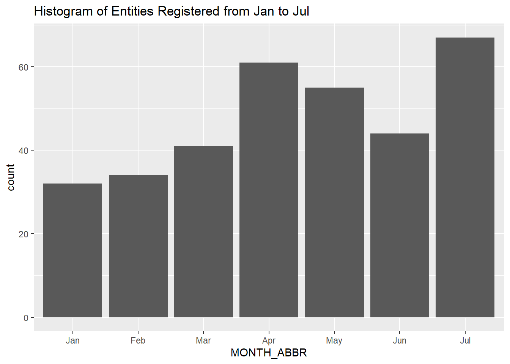
Spatial Pattern Analysis of Each Industries
In this section, we’ll be exploring where new business entities are located and if there’s any pattern where each industries are located, as well as if the location of one entity will affect where another entity will be located.
Entities that Develop App and Software
First-order Analysis
In this section, we’ll first visualize where companies that develop app and software are located.
tm_shape(bg) +
tm_polygons(col = "lightgrey", border.col = "white") +
tm_shape(biz_62011_sf) +
tm_dots(col = "red", size = 0.1)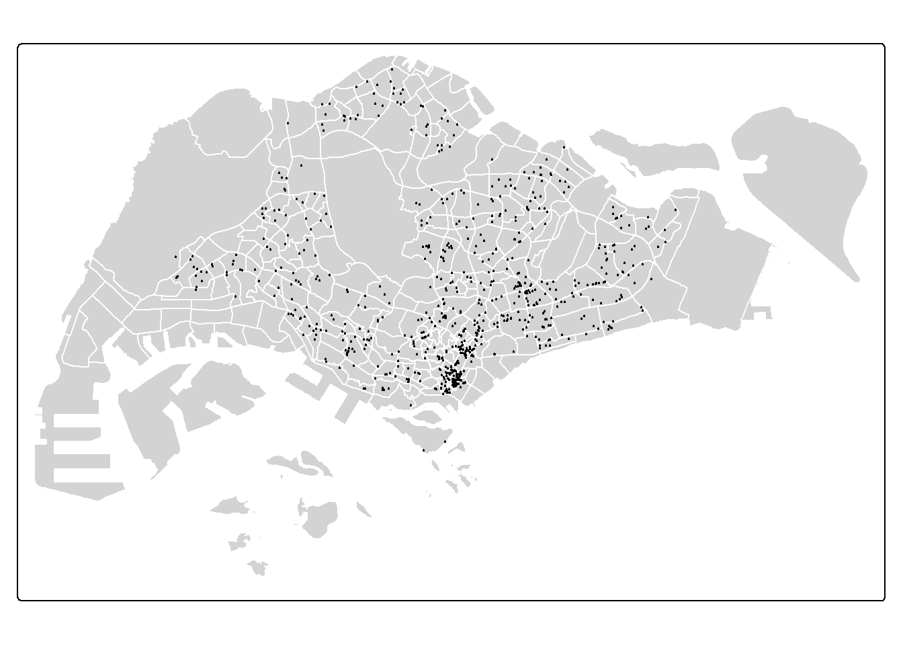
biz_62011_ppp <- as.ppp(biz_62011_sf)bg_owin <- as.owin(bg)
class(bg_owin)[1] "owin"tech_ppp <- biz_62011_ppp[bg_owin]Next, we’ll test using Clark-Evans to compare the observed mean nearest neighbor distance to the expected mean distance under a random distribution and Monte Carlo to simulate 99 times and draw conclusions based on those simulations if the clustering is significant or not.
clarkevans.test(tech_ppp,
correction="none",
clipregion="bg_owin",
alternative=c("clustered"),
method="MonteCarlo",
nsim=99)
Clark-Evans test
No edge correction
Monte Carlo test based on 99 simulations of CSR with fixed n
data: tech_ppp
R = 0.27002, p-value = 0.01
alternative hypothesis: clustered (R < 1)From the Clark-Evans test, we can see that R < 1, this means that there’s a high cluster point and since p-value is less than 0.05, this means that the observation is significant.
Compute KDE Values
Next, we’ll visualize the hotspots where entities usually cluster in using KDE. First, we’ll try to visualize using Gaussian kernel where each point is spread out according to Gaussian distribution.
kde_tech_diggle <- density(
tech_ppp,
sigma=bw.diggle,
edge=TRUE,
kernel="gaussian") plot(kde_tech_diggle)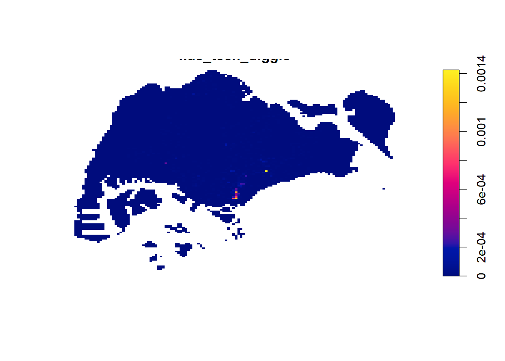
Let’s also print out the summary statistics of the plot.
summary(kde_tech_diggle)real-valued pixel image
128 x 128 pixel array (ny, nx)
enclosing rectangle: [2667.538, 56396.44] x [15748.72, 50256.33] units
dimensions of each pixel: 420 x 269.5907 units
Image is defined on a subset of the rectangular grid
Subset area = 784443200.264818 square units
Subset area fraction = 0.423
Pixel values (inside window):
range = [-1.863918e-19, 0.001422731]
integral = 1880
mean = 2.396604e-06bw <- bw.diggle(tech_ppp)
bw sigma
8.441197 As can be seen, the range is from 0 to 0.001422731 as we’re using the 3414 CRS. So it uses meters instead of kilometer. It is also difficult to interpret the graph since the range is less than 1, so let’s rescale it.
kde_tech_km <- rescale.ppp(
tech_ppp, 1000, "km")tech_diggle_km <- density(kde_tech_km,
sigma=bw.diggle,
edge=TRUE,
kernel="gaussian")plot(tech_diggle_km)As can be seen, the hotspots of the tech entities are somewhere in Downtown, let’s confirm the findings by using computing the KDE.
kde_tech_adaptive <- adaptive.density(
kde_tech_km,
method="kernel")
plot(kde_tech_adaptive)So we’ll focus on analyzing Geylang area since it has the a lot of data points.We’ll apply the same data preparation steps as above.
gl_tech <- bg %>%
filter(PLN_AREA_N == "GEYLANG")# sg map combined with data points
gl_tech_owin = as.owin(gl_tech)
tech_gl_ppp = biz_62011_ppp[gl_tech_owin]# rescaling from meters to km
gl_tech_ppp.km = rescale.ppp(tech_gl_ppp, 1000, "km")# plot the data and map
plot(unmark(gl_tech_ppp.km),
main="Geylang")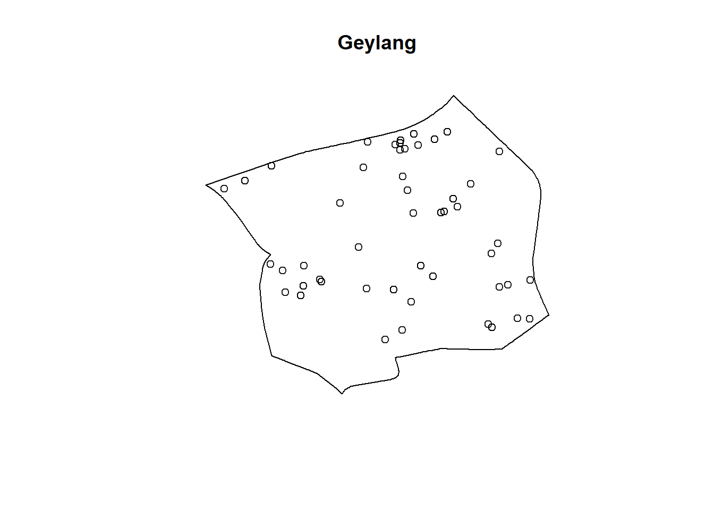
Second-order Analysis
Next, we’ll be exploring the spatial relationships between points. As was seen above, since there are a lot of very close clusters in Downtown, So I want to know how far it would be for me to find another tech company that develop apps and softwares to another company (looking at the nearest neighbour). In this case I’ll be using the G-function for the second order analysis
# set seed for reproducibility
set.seed(1234)G_GL = Gest(tech_gl_ppp, correction = "border")
plot(G_GL, xlim=c(0,500))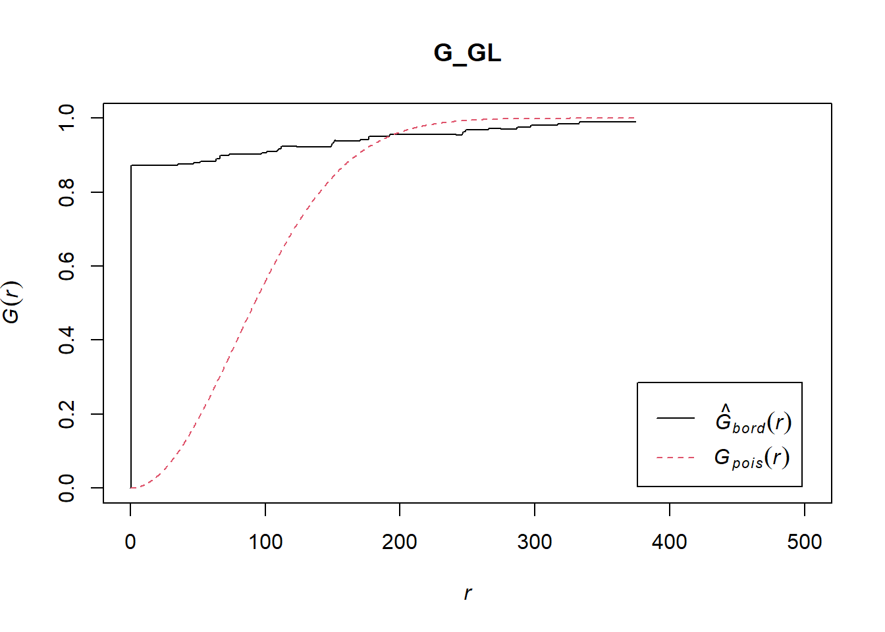
G_GL.csr <- envelope(tech_gl_ppp, Gest, nsim = 499)Generating 499 simulations of CSR ...
1, 2, 3, .5....10....15....20....25....30....35....40....45....50..
..55....60....65....70....75....80....85....90....95....100....105....110
....115....120....125....130....135....140....145....150....155....160....165...
.170....175....180....185....190....195....200....205....210....215....220....225.
...230....235....240....245....250....255....260....265....270....275....280....
285....290....295....300....305....310....315....320....325....330....335....340..
..345....350....355....360....365....370....375....380....385....390....395....400
....405....410....415....420....425....430....435....440....445....450....455...
.460....465....470....475....480....485....490....495...
499.
Done.plot(G_GL.csr,
main = "Nearest-neighbor G-function (CSR envelope)",
legend = TRUE,
shade = c("lo", "hi"))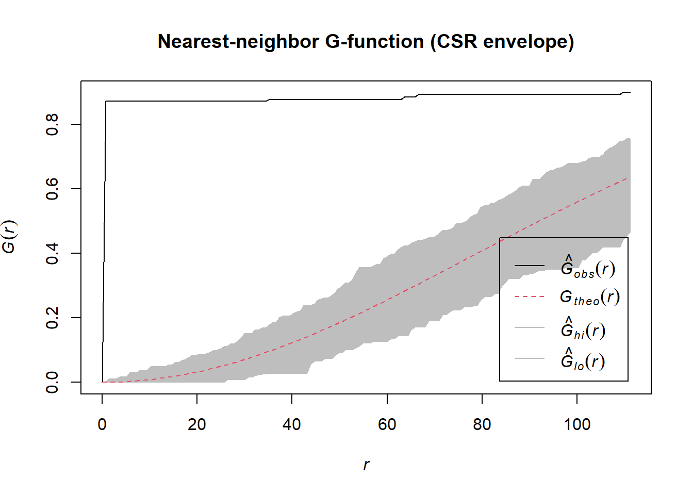
In this graph, we can see that it doesn’t really touch the envelope except for some parts, this means that there are a lot of clusters on close distance that makes the graph rapidly goes up when x-axis is 0.
Spatio-Temporal Analysis
Please find my spatio-temporal analysis on restaurant entities in this page instead
Restaurants
First-order Analysis
tm_shape(bg) +
tm_polygons(col = "lightgrey", border.col = "white") +
tm_shape(biz_56111_sf) +
tm_dots(col = "red", size = 0.1)biz_56111_ppp <- as.ppp(biz_56111_sf)restaurant_ppp <- biz_56111_ppp[bg_owin]clarkevans.test(restaurant_ppp,
correction="none",
clipregion="bg_owin",
alternative=c("clustered"),
method="MonteCarlo",
nsim=99)
Clark-Evans test
No edge correction
Monte Carlo test based on 99 simulations of CSR with fixed n
data: restaurant_ppp
R = 0.4307, p-value = 0.01
alternative hypothesis: clustered (R < 1)From the Clark-Evans test we can see that there are signs of clusters (0.43), although it may not be as strong as the entities that develop apps and software. The 0.01 p-value also points out that the observation is significant.
Compute KDE Values
As done above, we’ll apply the distance change from meter to kilometer and compute the KDE using adaptive density
kde_rest_km <- rescale.ppp(
restaurant_ppp, 1000, "km")kde_rest_adaptive <- adaptive.density(
kde_rest_km,
method="kernel")
plot(kde_rest_adaptive)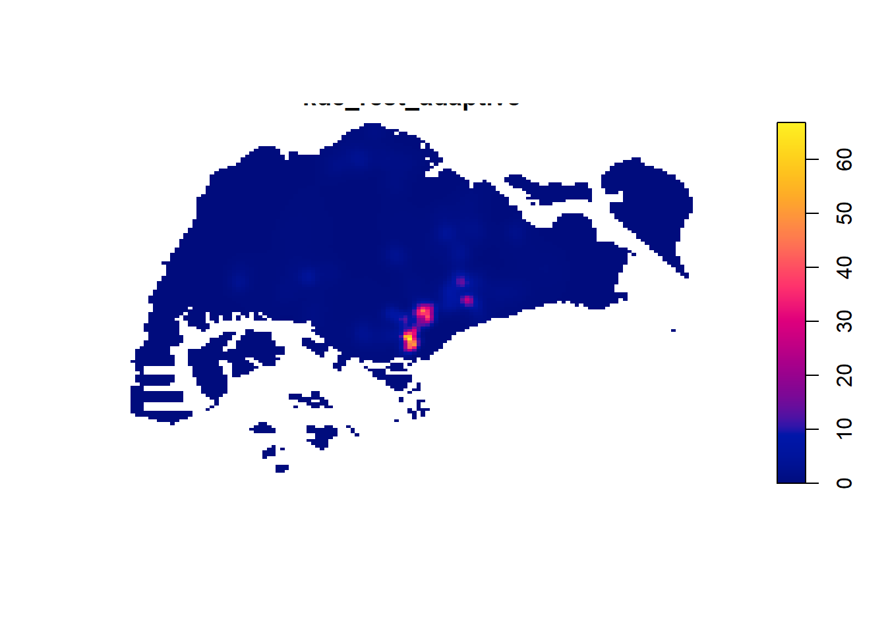
As can be seen from the graph, the points tend to cluster somewhere around the central area e.g. Geylang. So let’s focus on analyzing Geylang region.
gl_rest <- bg %>%
filter(PLN_AREA_N == "GEYLANG")# sg map combined with data points
gl_rest_owin = as.owin(gl_rest)
rest_gl_ppp = biz_56111_ppp[gl_rest_owin]# rescaling from meters to km
rest_gl_ppp.km = rescale.ppp(rest_gl_ppp, 1000, "km")# plot the data and map
plot(unmark(rest_gl_ppp.km),
main="Geylang")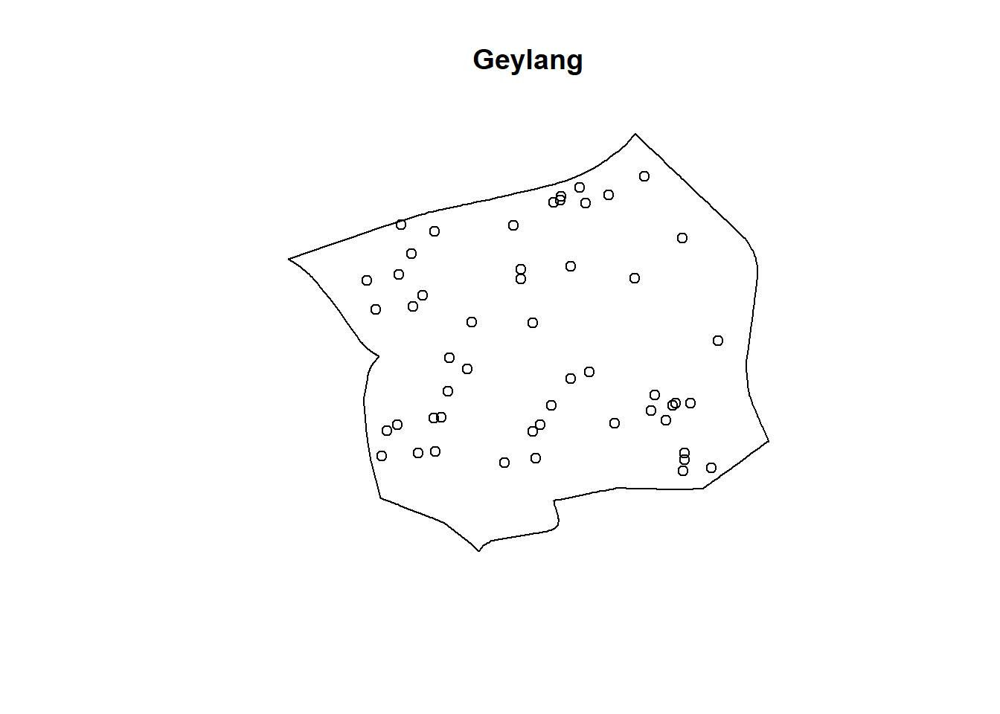
Second-order Analysis
As can be seen on the graph above, there are signs of clusters however it’s more dispersed than the previous industry. So in this case, I want to know how far it would be for me to find another restaurant from one restaurant (looking at the nearest neighbour). In this case I’ll be using the G-function for the second order analysis.
G_GL = Gest(rest_gl_ppp, correction = "border")
plot(G_GL, xlim=c(0,500))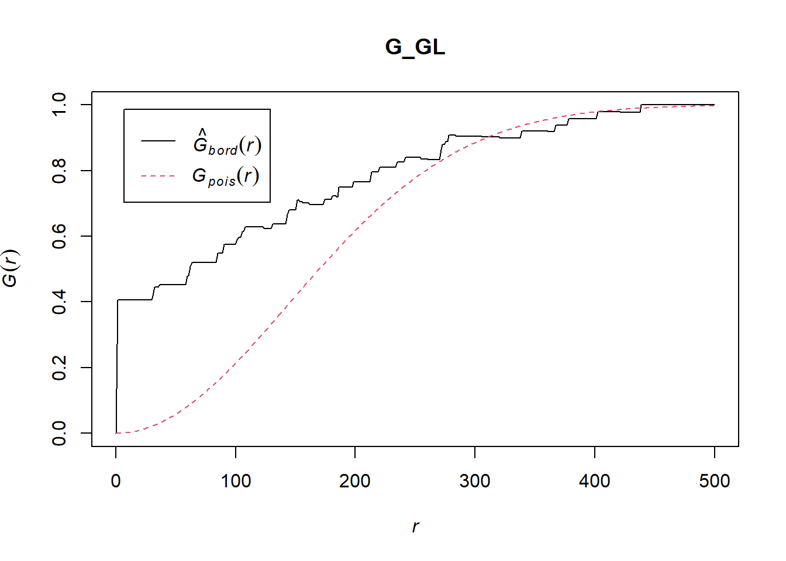
Next, we’ll perform complete spatial randomness test using Monte Carlo (499 simulations since it’s more precise without taking too much computational power)
G_GL.csr <- envelope(rest_gl_ppp, Gest, nsim = 499)Generating 499 simulations of CSR ...
1, 2, 3, .5....10....15....20....25....30....35....40....45....50..
..55....60....65....70....75....80....85....90....95....100....105....110
....115....120....125....130....135....140....145....150....155....160....165...
.170....175....180....185....190....195....200....205....210....215....220....225.
...230....235....240....245....250....255....260....265....270....275....280....
285....290....295....300....305....310....315....320....325....330....335....340..
..345....350....355....360....365....370....375....380....385....390....395....400
....405....410....415....420....425....430....435....440....445....450....455...
.460....465....470....475....480....485....490....495...
499.
Done.plot(G_GL.csr)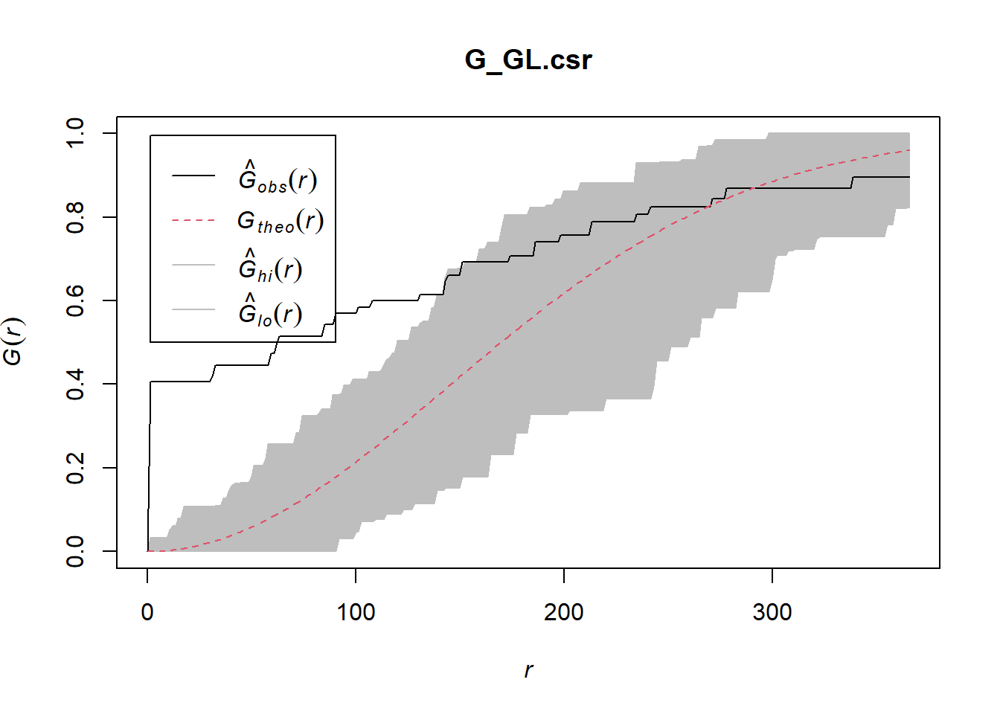
A few observations from the graph:
The data (black line) was not inside the envelope at the beginning, but it gradually goes into the envelope meaning that there is no clustering on entities on further distances but there is clustering on those who are on closer distance.
We can also observe that the greater the distance, we can gradually find other restaurants. They’re not located as close to each other as the line goes up gradually.
Spatio-Temporal Analysis
Please find my spatio-temporal analysis on restaurant entities in this page instead
Mini-marts, Convenience stores and Provision shops Entities
First-order Analysis
tm_shape(bg) +
tm_polygons(col = "lightgrey", border.col = "white") +
tm_shape(biz_47102_sf) +
tm_dots(col = "red", size = 0.1)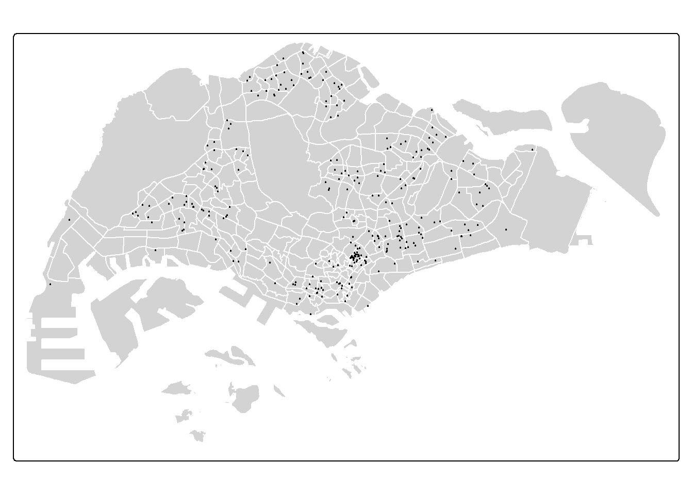
biz_47102_ppp <- as.ppp(biz_47102_sf)shop_ppp <- biz_47102_ppp[bg_owin]clarkevans.test(shop_ppp,
correction="none",
clipregion="bg_owin",
alternative=c("clustered"),
method="MonteCarlo",
nsim=99)
Clark-Evans test
No edge correction
Monte Carlo test based on 99 simulations of CSR with fixed n
data: shop_ppp
R = 0.47358, p-value = 0.01
alternative hypothesis: clustered (R < 1)From the Clark-Evans test, we can see that there’s signs fo clusters although not as strong as the previous two industries. However there are still signs of cluster as the R value is 0.47 and the observation is quite significant as p-value is 0.01. So to investigate this further we can compute the KDE values.
Compute KDE Values
# apply changes from meters to km
kde_shop_km <- rescale.ppp(
shop_ppp, 1000, "km")# compute kde with adaptive density
kde_shop_adaptive <- adaptive.density(
kde_shop_km,
method="kernel")
plot(kde_shop_adaptive)We’ll focus on analyzing Kallang region since there’s a clusters of points in that region. We’ll apply the same data preparation steps as above.
kl_shop <- bg %>%
filter(PLN_AREA_N == "KALLANG")# sg map combined with data points
kl_shop_owin = as.owin(kl_shop)
shop_kl_ppp = biz_47102_ppp[kl_shop_owin]# rescaling from meters to km
shop_kl_ppp.km = rescale.ppp(shop_kl_ppp, 1000, "km")# plot the data and map
plot(unmark(shop_kl_ppp.km),
main="Kallang")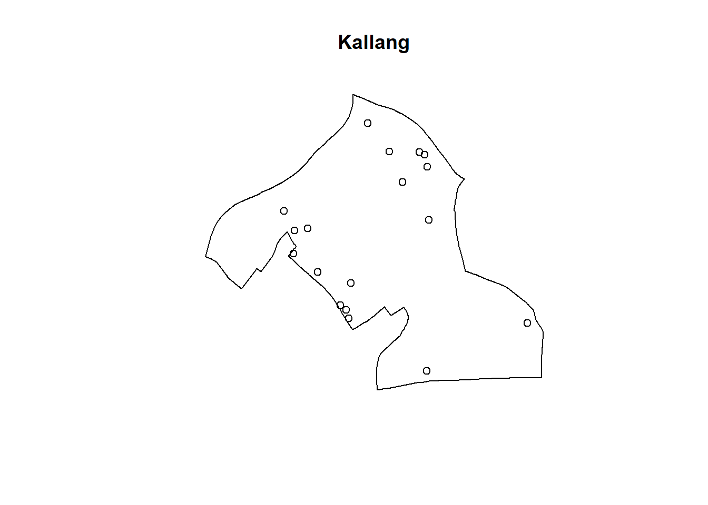
Second-order Analysis
Through the plot above, we can see that the clusters in Kallang region are more not so close to each other even though there are signs clusters. Since I want to explore how far or close are each mini-markets and convenience shops are from each other, I will use G-function again to compute how far or close they are from each other.
G_KL = Gest(shop_kl_ppp, correction = "border")
plot(G_KL, xlim=c(0,500))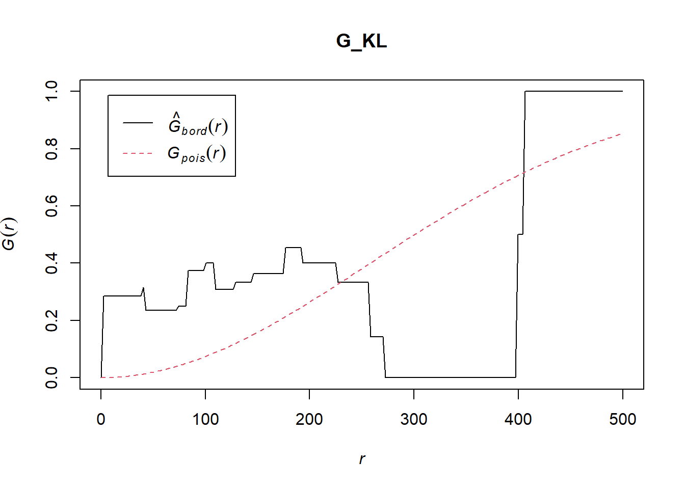
G_KL.csr <- envelope(shop_kl_ppp, Gest, nsim = 499)Generating 499 simulations of CSR ...
1, 2, 3, .5....10....15....20....25....30....35....40....45....50..
..55....60....65....70....75....80....85....90....95....100....105....110
....115....120....125....130....135....140....145....150....155....160....165...
.170....175....180....185....190....195....200....205....210....215....220....225.
...230....235....240....245....250....255....260....265....270....275....280....
285....290....295....300....305....310....315....320....325....330....335....340..
..345....350....355....360....365....370....375....380....385....390....395....400
....405....410....415....420....425....430....435....440....445....450....455...
.460....465....470....475....480....485....490....495...
499.
Done.plot(G_KL.csr)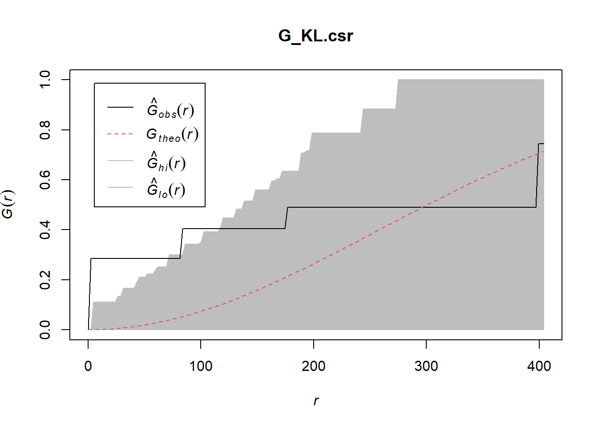
In this graph, we can see that only at the beginning the data doesn’t touch the envelope. This means that the data is consistent with CSR, so there’s no evidence of clustering.
Spatio-pattern Analsysis
Please find my spatio-temporal analysis on restaurant entities in this page instead